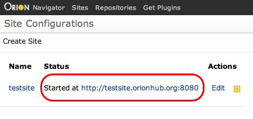

The Site Configurations page allows you to manage sites used to test and deploy applications developed with Orion. To configure a new site, click Create Site in the tool bar. Once created, you can launch, edit, rename, or delete sites from the Actions column of the site list. Editing a site will take you to the Edit Site page for that site. Once a site has been launched, you can click the URL of the deployed site to view it.

This document is maintained in a collaborative wiki. If you wish to update or modify this document please visit http://wiki.eclipse.org/Orion/Documentation/User_Guide/Reference/Site_Configurations_page